Niti B. Jadeja
Hello, I'm Dr. Niti B. Jadeja — a Postdoctoral Research Associate at the University of Virginia, studying host-pathogen interactions in bacterial infections. With over 15 years of research experience spanning metagenomics, environmental biotechnology, and infectious disease biology, I've worked across labs in India, Finland, and the United States.
About
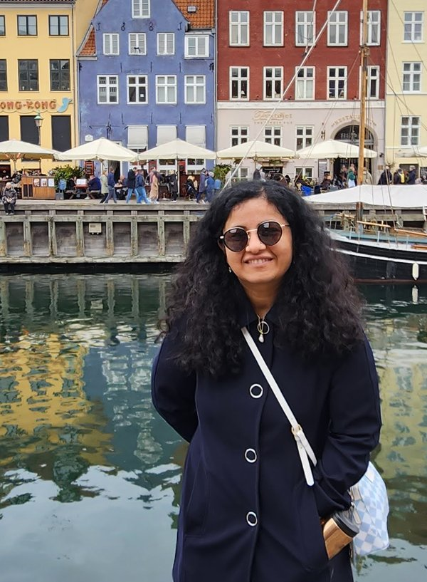
I bring spatial omics and AI/ML-driven analysis to the study of microbes — decoding how microbial life behaves at single-cell resolution, whether inside an infected host or across an entire wastewater ecosystem.
I earned my Ph.D. in Biotechnology from RTMNU, Nagpur, India, researching novel oxygenases in effluent treatment plant metagenomes at India's National Environmental Engineering Research Institute (NEERI). That work took me from wastewater bioremediation and antimicrobial resistance research in India and at the Finnish Environmental Institute, to my current focus at the Agaisse Lab, Department of Microbiology, University of Virginia School of Medicine, where I study Shigella infection biology using an infant rabbit model.
Along the way, I've contributed to the IPCC Sixth Assessment Report, the UN Interagency Coordination Group on Antimicrobial Resistance, and mentored more than a dozen master's students. I'm a lifetime member of the Surveillance and Epidemiology of Drug-resistant Infections Consortium (SEDRIC) and the Organisation for Women in Science, Asia Chapter.
Experience
Postdoctoral Research Associate
Agaisse Lab, Dept. of Microbiology, School of Medicine, University of Virginia
May 2022 — Present
Studying host-pathogen interactions in Shigella infection using an infant rabbit model, mapping colonic mucosa invasion and characterizing virulence gene regulation.
Postdoctoral Fellow
Ashoka Trust for Research in Ecology and the Environment (ATREE), Bangalore, India
May 2020 — May 2022
Contributed to the National Mission on Biodiversity and Human Well-Being, and served as Young Water Professional Chapter Coordinator for the International Water Association's Global Emerging Water Leaders Steering Committee.
Research Scientist
The Foundation for Medical Research, Mumbai, India
Sept 2018 — Sept 2019
Conducted applied biomedical research, building on a background in metagenomics and molecular microbiology.
CSIR-Senior Research Fellow
Environmental Biotechnology & Genomics Division, NEERI, Nagpur, India
Oct 2015 — Dec 2018
Carried out doctoral research on metagenomic screening of effluent treatment plant microbiomes for novel oxygenases, including a mobility-grant visit to Finland's SYKE institute for Baltic Sea metagenomic analysis.
Education
Ph.D. in Biotechnology
RTMNU, Nagpur, India
2019
Doctoral research: "Screening of effluent treatment plant metagenome for novel oxygenase," carried out at India's National Environmental Engineering Research Institute (NEERI).
M.Sc. in Biotechnology
B.R. Doshi School of Biosciences, Sardar Patel University, India
2010
Graduate coursework and research in biotechnology, laying the foundation for a career in microbial genomics.
B.Sc. in Botany
Sir P.T. Science College, Veer Narmad South Gujarat University, India
2008
Graduated as Gold Medallist. Also held the rank of Senior Under Officer with a National Cadet Corps 'C' Certificate — India's student military training program, roughly equivalent to Army ROTC in the U.S.
Research Focus
Host-Pathogen Interactions
Investigating Shigella infection dynamics and virulence gene regulation using in vivo infection models.
Metagenomics & Microbiome Analysis
Applying high-throughput sequencing and bioinformatics to decode microbial community structure and function.
Environmental Biotechnology
Studying bioremediation strategies and wastewater treatment microbiology to address industrial and municipal pollution.
Antimicrobial Resistance
Researching AMR dissemination between animal, agricultural, and clinical niches, with contributions to global policy panels.
Scientific Writing & Publication
Authoring peer-reviewed research articles, book chapters, and conference proceedings across microbiology and biotechnology.
Mentoring & Teaching
Guiding graduate student research and teaching wastewater management coursework at CSIR AcSIR, NEERI.
Publications
Chapters
Research
Mentored
Selected Research
A selection of research spanning host-pathogen biology, genomics, environmental metagenomics, and antimicrobial resistance — from infection models to wastewater microbiomes.
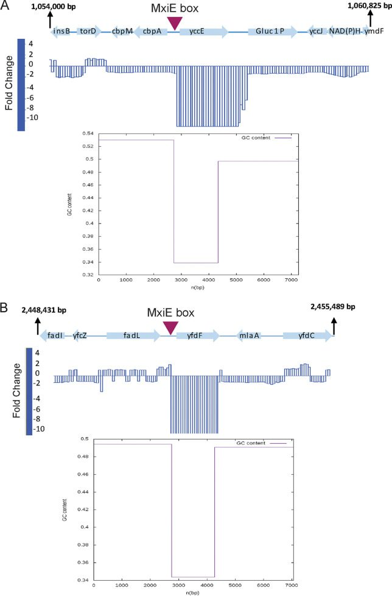
Shigellosis in the Infant Rabbit ModelSpatial and temporal mapping of colonic mucosa invasion in the infant rabbit model of shigellosis, combining RNA-seq and spatial transcriptomics to characterize how Shigella flexneri invades and spreads through host tissue during infection. Presented at the EMBO Workshop: Shigella – From Biology to Prevention, Institut Pasteur, Paris, April 2026.
- Infection Biology
- Spatial Transcriptomics
- Host-Pathogen Interaction
Whole Genome Analysis
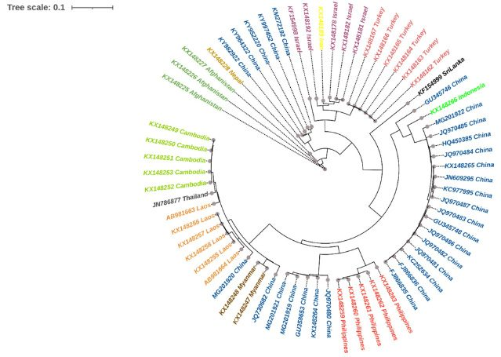
Genomics of Indian Rabies Virus IsolatesGenome sequencing of five Indian canine rabies virus isolates using Oxford Nanopore Technologies, with phylogenetic analysis of canine RABV whole-genome sequences from Asian and Middle Eastern countries, contributing to viral surveillance and One Health research in India.
- Whole Genome Analysis
- Phylogenetics
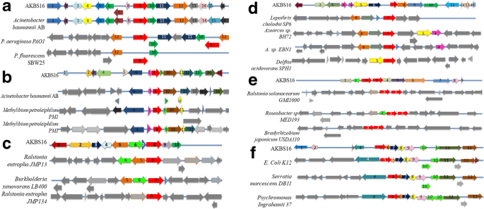
Genome Sequencing of Biosurfactant-Producing StrainsGenome sequencing and analysis of Bacillus sp. AKBS9 and Acinetobacter sp. AKBS16, mapping the genetic organization of aromatic compound-cleaving oxygenases relevant to biosurfactant production and bioremediation potential.
- Whole Genome Analysis
- Biosurfactant Production
Metagenomics
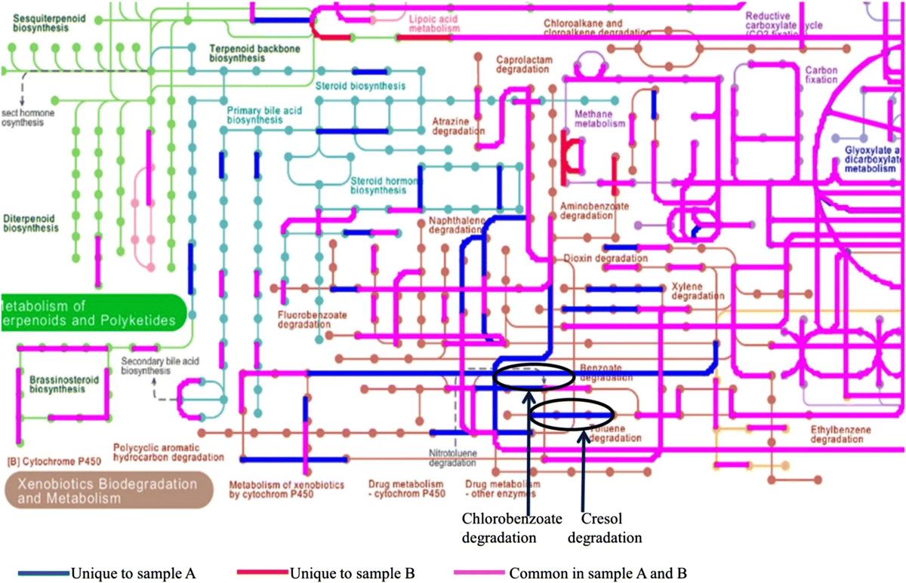
Decoding Microbial Intelligence in WastewaterA metagenomic study decoding how microbial communities in activated sludge adapt and function, mapping metabolic pathways onto the KEGG global metabolism atlas, with implications for designing more efficient industrial wastewater treatment systems.
- Metagenomics
- Bioremediation
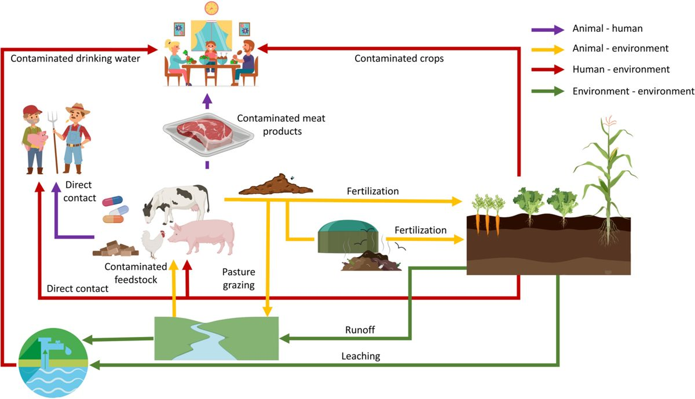
Gut to Mud: AMR Across NichesA review of how antimicrobial resistance disseminates between animal, agricultural, and environmental niches across the One Health interface, informing international AMR policy discussions including the UN IACG.
- Antimicrobial Resistance
- Metagenomics
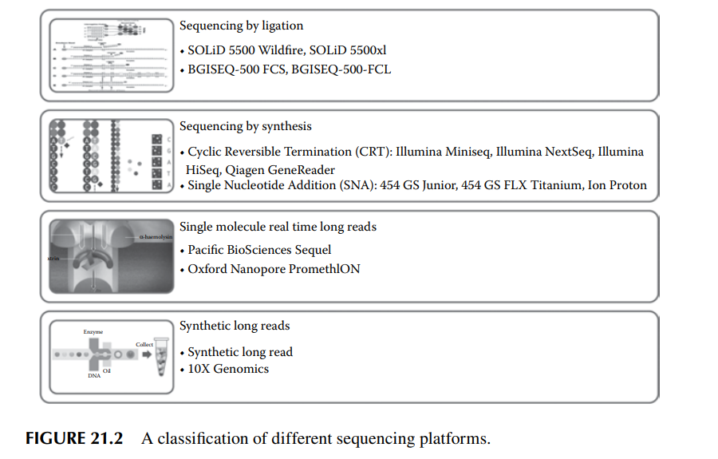
Knowledge-Based Bioremediation StrategiesA book chapter reviewing sequencing platforms and metagenomic approaches used to design targeted, knowledge-based bioremediation strategies for contaminated environments.
- Bioremediation
- Metagenomics
Leadership & Service
Vice Chair, Professional Development Committee
UVA Postdoctoral Association
Current
Helping shape career-development programming and professional-growth initiatives for postdocs across the University of Virginia.
Global Chapter Coordinator
International Water Association (IWA), Young Water Professionals / Global Emerging Water Leaders
2020 – 2022
Coordinated global chapter activities connecting early-career water professionals across countries and regions.
Jury Member, NITI Next Generation Water Action
DTU Skylab, Technical University of Denmark
2022
Served on the jury alongside representatives from India's National Jal Jeevan Mission, NITI Aayog, and DTU Skylab, evaluating student-led water innovation challenges as the IWA Young Water Professionals representative.
Conferences & Talks
Moments from conferences, workshops, and speaking engagements over the years.


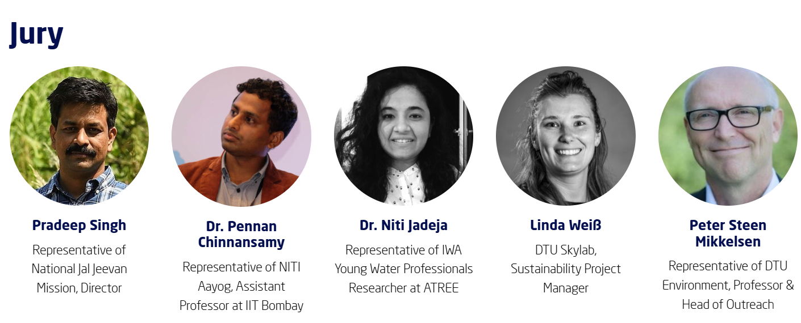
Visiting Researcher — Finland
In 2016, I received a mobility grant from the Academy of Finland to work as a visiting researcher at SYKE, the Finnish Environmental Institute, on quantitative and metagenomic analysis of Baltic Sea sediment samples.
The fieldwork took me out onto the Baltic Sea for hands-on sediment sampling — sorting samples on deck, running net collections, and working alongside the SYKE team to understand microbial community dynamics in one of the world's most studied brackish ecosystems.
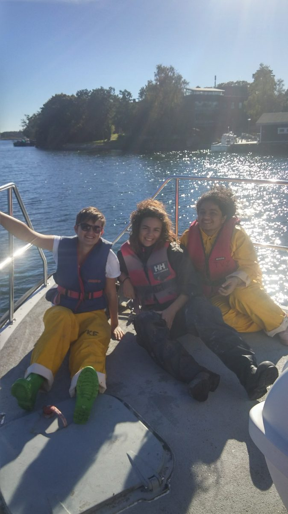
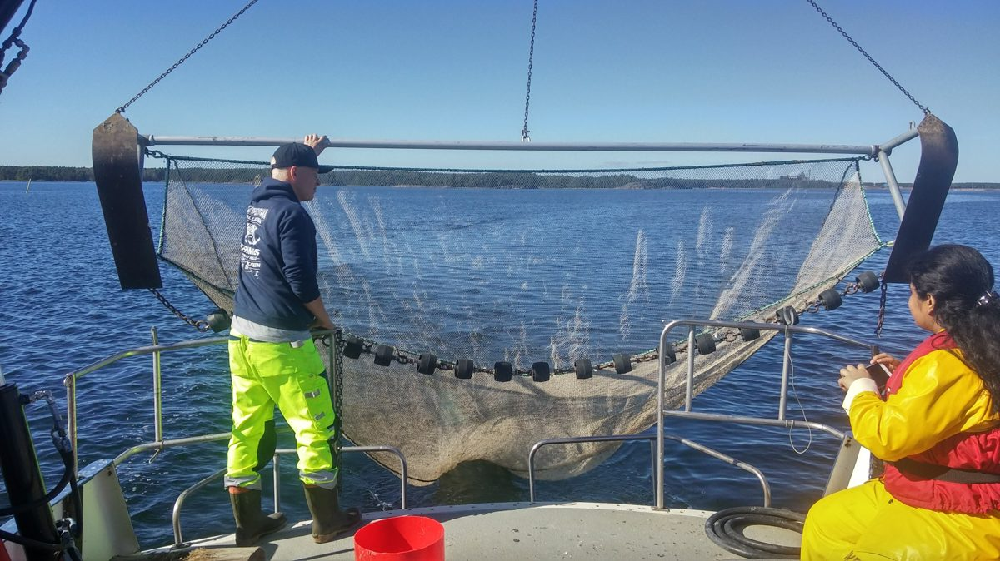
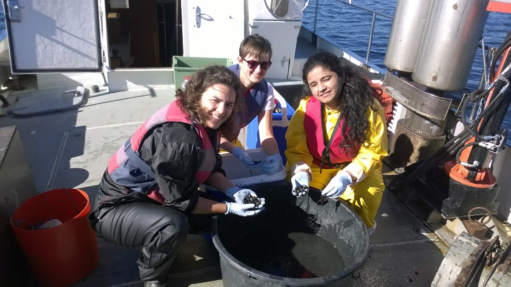
Beyond the Lab
Outside of research, I love to travel — I've explored 4 continents and more than 30 countries, chasing everything from the northern lights to canal cities and spring bulb fields.
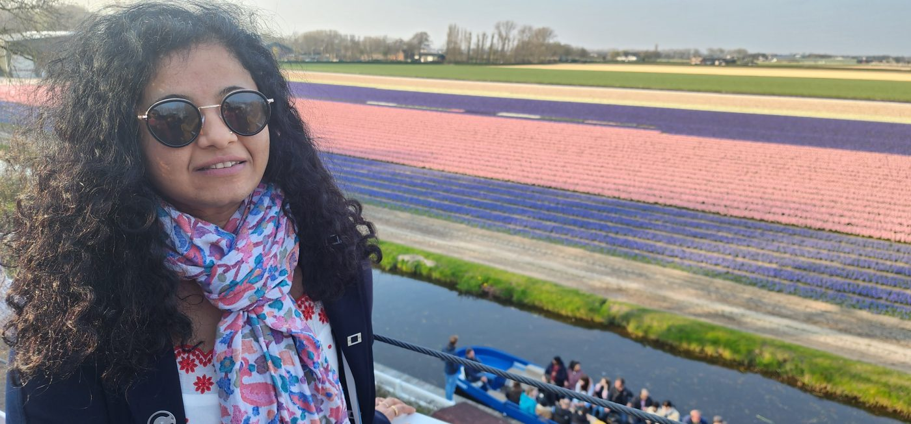
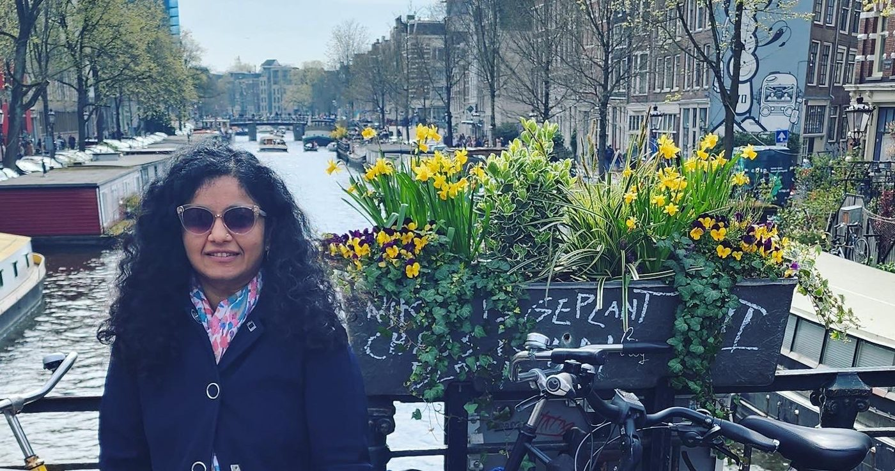
More travel notes and photos over on LinkedIn.